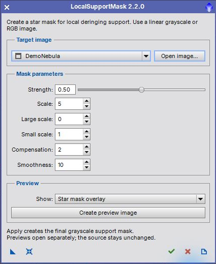

Version 2.2.0. Create a grayscale local deringing support mask for Deconvolution. [more]
Keywords: deconvolution, local support, star mask, deringing
[hide]
[hide]
LocalSupportMask prepares a star mask for use as the local support image in Deconvolution. It accepts a linear grayscale or RGB main image, prepares its luminance with MultiscaleLinearTransform and HistogramTransformation, and generates the final mask with StarMask.

The compact dialog opens before an image is available. Select an open image or use Open image, then adjust the mask parameters. Apply creates a separate grayscale mask and keeps the dialog open. The source pixels, selections and existing masks are not modified.
[hide]
[hide]
Strength
Controls the mask brightness through the StarMask midtones balance. Higher displayed strength means a lower midtones balance and a brighter mask. Default 0.50; range 0–1. Saved instances retain the original script's midtones convention.
Scale
Number of wavelet layers used by StarMask for structure detection; default 5, range 2–12.
Large scale
Growth of large detected structures; default 0, range 0–15.
Small scale
Growth of small detected structures; default 1, range 0–15.
Compensation
Small-scale growth compensation; default 2, range 0–4.
Smoothness
Smoothing of the generated mask structures; default 10, range 0–40.
The intermediate preparation retains the original multiscale and histogram settings. The exposed parameters affect the subsequent StarMask operation. This script is intended for linear input; it does not test or correct the input's processing history.
[hide]
Intermediate luminance
Create a separate image showing the luminance after multiscale filtering and histogram preparation, before StarMask. This is useful for checking what StarMask will receive.
Star mask overlay
Create StarMask's overlay representation on the prepared luminance. This is a diagnostic color display, not the final grayscale support mask.
Apply
Always create a separate grayscale support mask. The preview choice does not change the final mask calculation.
Preview windows and final masks remain available after closing the dialog. They use unique names, so repeated trials do not overwrite earlier results. Temporary processing windows are closed on success, cancellation or error. The interface has no persistent embedded bitmap preview, avoiding the former graphics-lifetime crash path.
[hide]
Drag New Instance to save the mask settings and preview mode. Apply the instance to a main image to generate its final mask. RGB and grayscale main views are supported; preview views are not valid final-mask targets.
Reset restores parameter defaults while retaining the selected image. Apply keeps the dialog open. Close closes it when idle or requests cancellation during processing; cancellation takes effect between native processing steps. Documentation opens this guide. Closing an unused dialog performs no image processing.
[hide]
Compact 420-pixel interface; open-first workflow; repeated Apply; independent intermediate and overlay preview windows; source-preserving RGB luminance conversion; safe cleanup and dialog close handling; updated PiDoc guide.
Copyright © 2022–2026 Thorsten Glebe